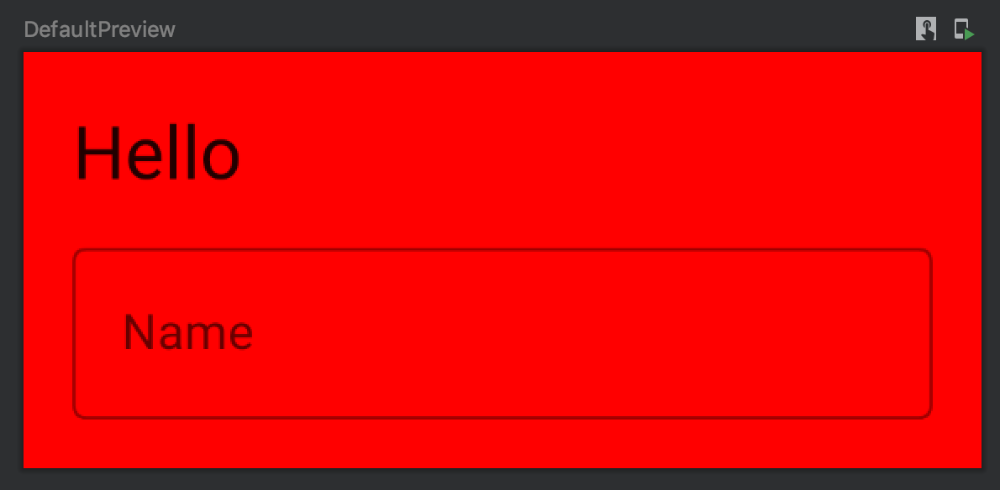
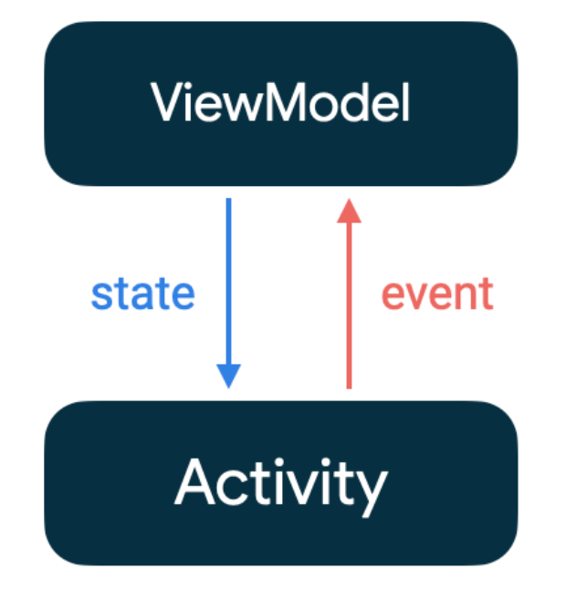

Jetpack Compose 2 State
[TOC]
Compose 中的状态
应用中的状态是指可以随时间变化的任何值。
状态的概念是 Compose 的核心
@Composable
fun HelloContent() {
Column(modifier = Modifier.padding(16.dp)) {
Text(
text = "Hello!",
modifier = Modifier.padding(bottom = 8.dp),
style = MaterialTheme.typography.h5
)
// 相当于 EditText
OutlinedTextField(
value = "",
onValueChange = { },
// 相当于 hint 属性
label = { Text("Name") }
)
}
}

程序运行后，点击 OutlinedTextField 会弹出输入法，但输入内容不会显示到输入框中，TextField 不会自行更新，但会在其 value 参数更改时更新。这是因 Compose 中组合和重组的工作原理造成的。
onValueChange 函数没有实现更新操作
在函数外定义 text 变量，在以前开发中是可以这样操作的，代码如下；
// 定义变量记录 value 变化
var text = ""
@Composable
fun HelloContent() {
Column(modifier = Modifier.padding(16.dp)) {
Text(
text = "Hello",
modifier = Modifier.padding(bottom = 8.dp),
style = MaterialTheme.typography.h5
)
OutlinedTextField(
value = text,
onValueChange = { text = it },
label = { Text("Name") }
)
}
}
运行后还是无法更新输入框内容，这里需要引入状态
组合和重组
组合：是描述界面的可组合项的树结构
初始组合：通过首次运行可组合项创建组合
重组Recomposition：在数据发生变化时重新运行可组合项以更新组合
组合只能通过初始组合生成且只能通过重组进行更新。修改组合的 唯一方式 是通过重组实现。
使用状态
请使用 remember { mutableStateOf() } 传入文本的默认值
@Composable
fun HelloContent() {
Column(modifier = Modifier.padding(16.dp)) {
// name: MutableState<String>； 当 name 变化时，TextField 显示的值也会发生变化
val name = remember { mutableStateOf("") }
OutlinedTextField(
value = name.value,
onValueChange = { name.value = it },
label = { Text("Name") }
)
}
}
remember 是一个可以赋予另一种可组合函数记忆能力的函数。remember 可帮助您在重组后保持状态
mutableStateOf 会创建 MutableState，后者是 Compose 中的可观察类型。值如有任何更改，系统会安排重组读取此值的所有可组合函数。
remember 可帮助您在重组后保持状态，如果在还未使用 remember 的情况下使用 mutableStateOf，则每次重组 HelloContent 可组合项时，系统都会将状态重新初始化为默认值；
val name: MutableState<String> = mutableStateOf("")
注意：
remember与mutableStateOf同时使用
可以将 remember 的值用作其他可组合项的参数或语句中的逻辑判断
@Composable
fun HelloContent() {
Column(modifier = Modifier.padding(16.dp)) {
// name: MutableState<String>
val name = remember { mutableStateOf("") }
// name 不为空时，显示 Text 组件； 为空时则不显示 Text 组件，不需要 else
if (name.value.isNotEmpty()) {
Text(
text = "Hello, ${name.value}!",
modifier = Modifier.padding(bottom = 8.dp),
style = MaterialTheme.typography.h5
)
}
OutlinedTextField(
value = name.value,
onValueChange = { name.value = it },
label = { Text("Name") }
)
}
}
remember 不会在配置更改后保持状态
rememberSaveable 会自动保存可保存在 Bundle 中的任何值；对于其他值，您可以将其传入自定义 Saver 对象。
无状态可组合项
可组合函数保持自己的状态，会变得难以复用，也会与状态的存储方式强耦合；应改为无状态可组合项，即不保持状态的可组合项，通过状态提升完成
状态提升是一种编程模式，可以将可组合项的状态移至该可组合项的调用方
在本示例中，从 HelloContent 中提取 name 和 onValueChange，并按照可组合项的树结构将它们移至调用方
@Composable
fun HelloScreen() {
// 将状态提升到调用方
var nameState = rememberSaveable { mutableStateOf("") }
HelloContent(name = nameState.value, onNameChange = { nameState.value = it })
}
@Composable
fun HelloContent(name: String, onNameChange: (String) -> Unit) {
Column(modifier = Modifier.padding(16.dp)) {
Text(
text = "Hello, $name",
modifier = Modifier.padding(bottom = 8.dp),
style = MaterialTheme.typography.h5
)
OutlinedTextField(
value = name,
onValueChange = { onNameChanged(it) },
label = { Text("Name") }
)
}
}
状态下降，事件上升
单项数据流
单项数据流（UDF unidirectional data flow）一种状态向下流动而事件向上流动的设计 
class HelloViewModel: ViewModel() {
// LiveData holds state which is observed by the UI
// (state flows down from ViewModel)
val name = MutableLiveData("")
// onNameChanged is an event we're defining that the UI can invoke
// (events flow up from UI)
fun onNameChanged(newName: String) {
name.value = newName
}
}
@Composable
fun helloScreenWithViewModel(viewModel: HelloViewModel) {
val name: String by viewModel.name.observeAsState("")
HelloContentState(name = name) {
viewModel.onNameChanged(it)
}
}
class MainActivity : ComponentActivity() {
val helloViewModel by viewModels<HelloViewModel>()
override fun onCreate(savedInstanceState: Bundle?) {
super.onCreate(savedInstanceState)
setContent {
Surface(color = Color.Red) {
helloScreenWithViewModel(helloViewModel)
}
}
}
}
observeAsState可观察LiveData<T>并返回State<T>对象，每当LiveData发生变化时，该对象都会更新。State<T>是 Jetpack Compose 可以直接使用的可观察类型。仅当LiveData在组合中时，observeAsState才会观察LiveData。
通过三种方式声明一个 MutableState 对象：
1. val state = remember { mutableStateOf(default) }
2. val value by remember { mutableStateOf(default) }
3. val (value, setValue) = remember { mutableStateOf(default) }
其中，
state 是 MutableState 类型；
value 与 default 类型一致，
setValue 是函数类型 (default) -> Unit
当在组合中创建 State < t > (或其他有状态对象)时，重要的是要记住它。否则，它将重新初始化每个组合。
ViewModel中使用MutableState时不需要remember
Compose 通过读取 State<T> 对象自动重组界面
常见可观察类型创建 State<T> 的函数：
- LiveData
- Flow
- RxJava2
在 Compose 中将可变对象（如 ArrayList 或 mutableListOf()）用做状态会导致界面看不到新数据，无刷新； 不可观察对象(如 ArrayList )不能有
Compose观察，不会触发重组
提升的状态具有一些重要的属性：
- 单一可信来源：通过移动状态而不是复制状态
- 封装：
- 可共享：
- 可拦截：
- 解耦：
状态提升的规则：
- 状态应至少提升到使用该状态（读取）的所有可组合项的最低共同父项
- 状态应至少提升到它可以发生变化（写入）的最高级别
- 如果两种状态发生变化以响应相同的事件，它们应一起提升
保存状态
remember
可组合函数可以使用 remember 可组合项记住单个对象; remember 既可用于存储可变对象，又可用于存储不可变对象。
val state = remember { mutableStateOf(default) }
val value = remember(id) { default }
remember(id) {default} 可以通过 map key/ value 结构理解，
rememberSaveable
在重新创建 activity 或进程后，您可以使用 rememberSaveable 恢复界面状态。rememberSaveable 可以在重组后保持状态
如果对象无法添加到 Bundle 中，有一下几种替代方法：
Parcelize
使用 @Parcelize 修饰，是最简单的解决方案;
@Parcelize
data class City(val name: String, val country: String)
@Composable
fun MyExample() {
var city = rememberSaveable { mutableStateOf(City("Jack", "Beijing")) }
}
mapSaver
如果 @Parcelize 不合适，可以使用 mapSaver 定义自己的规则
data class City(val name: String, val country: String)
val CitySaver = run {
val nameKey = "Name"
val countryKey = "Country"
mapSaver(
save = { mapOf(nameKey to it.name, countryKey to it.country) },
restore = { City(it[nameKey] as String, it[countryKey] as String) }
)
}
@Composable
fun MyExample() {
var selectedCity = rememberSaveable { mutableStateOf(City("Madrid", "Spain")) }
}
listSaver
为了避免需要为映射定义键，您也可以使用 listSaver 并将其索引用作键：
data class City(val name: String, val country: String)
val CitySaver = listSaver<City, Any>(
save = { listOf(it.name, it.country) },
restore = { City(it[0] as String, it[1] as String) }
)
@Composable
fun MyExample() {
var selectedCity = rememberSaveable { mutableStateOf(City("Madrid", "Spain")) }
}